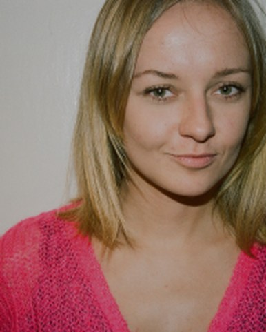
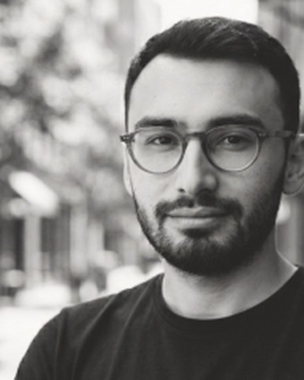
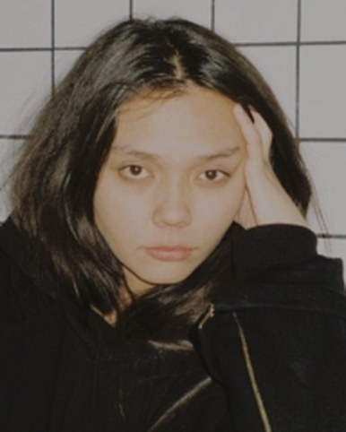
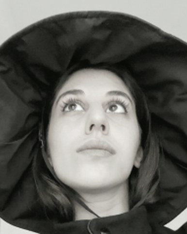
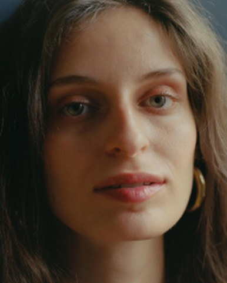

Before anything is specified, we ask what the guest should feel a year from now.

Cultural producer with over 20 years of experience and a Master of Fine Arts in Cultural Programming. Founder and creative director of RUNO, producing large-scale cultural events and brand experiences.

Producer with 10+ years producing culture, music and brand projects, from creative strategy to the technical execution of large-scale international events and content series.

Graphic designer and art director. Known for branding and visual identity work for the Kazakhstan Pavilion at the 2022 Venice Biennale.

Producer and project coordinator who, early in her career, has already served as lead producer on a project for the House of Chanel and secured several recurring clients for the agency.

Producer and PR director. A musicologist and graduate of the Moscow Conservatory, she speaks regularly at international conferences across Europe and Georgia.